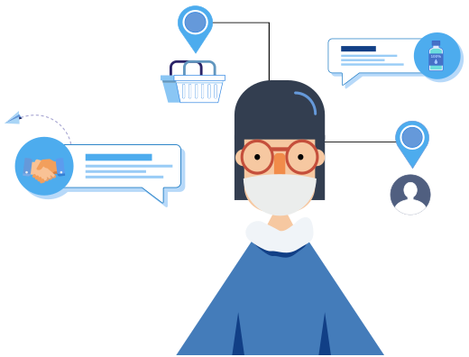
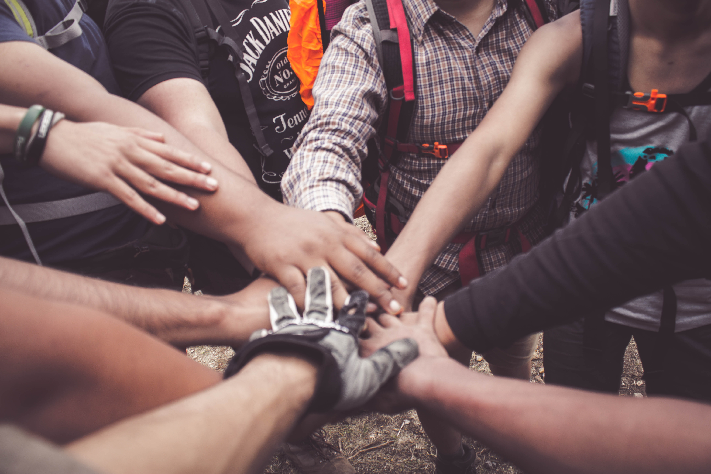
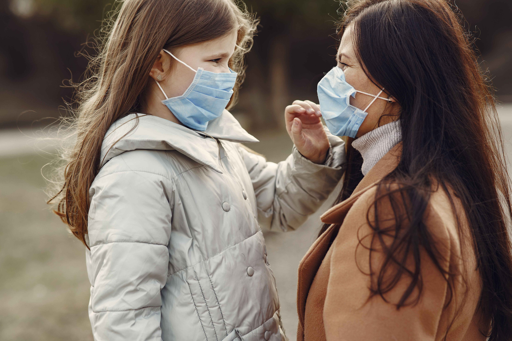
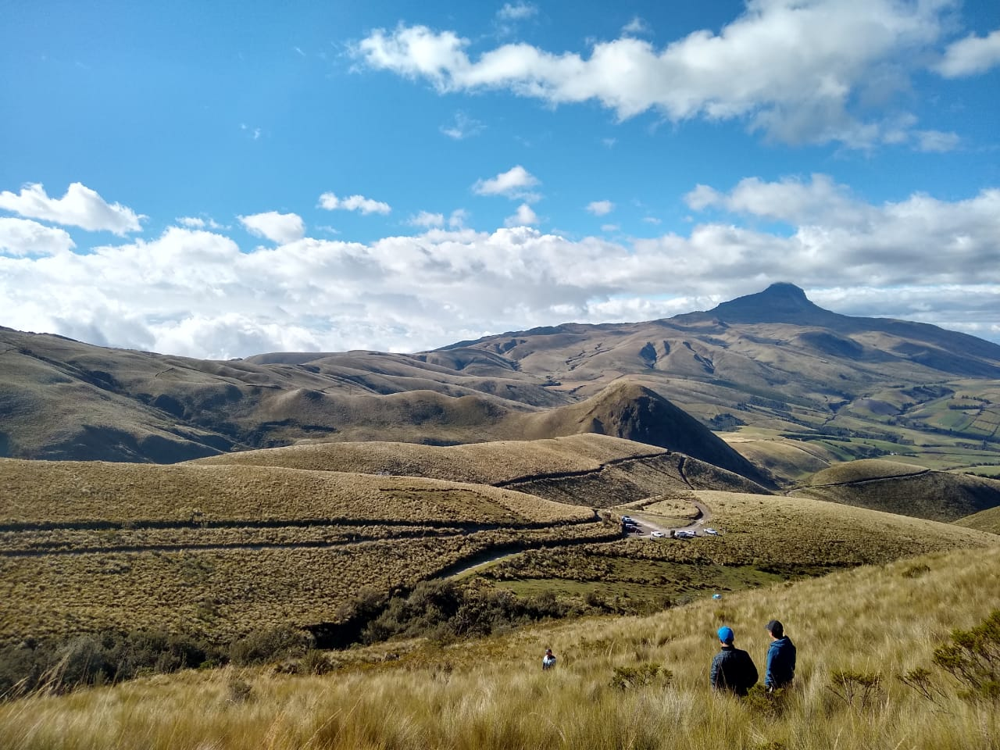
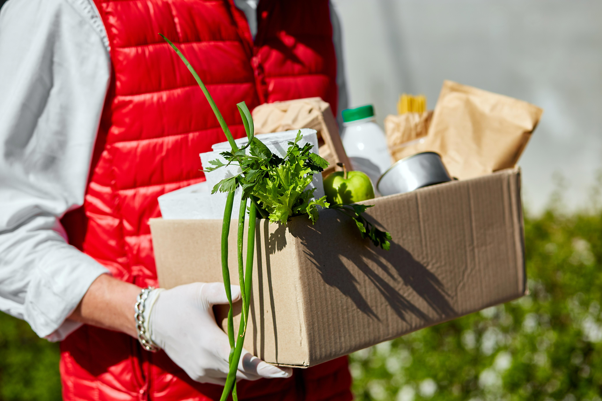
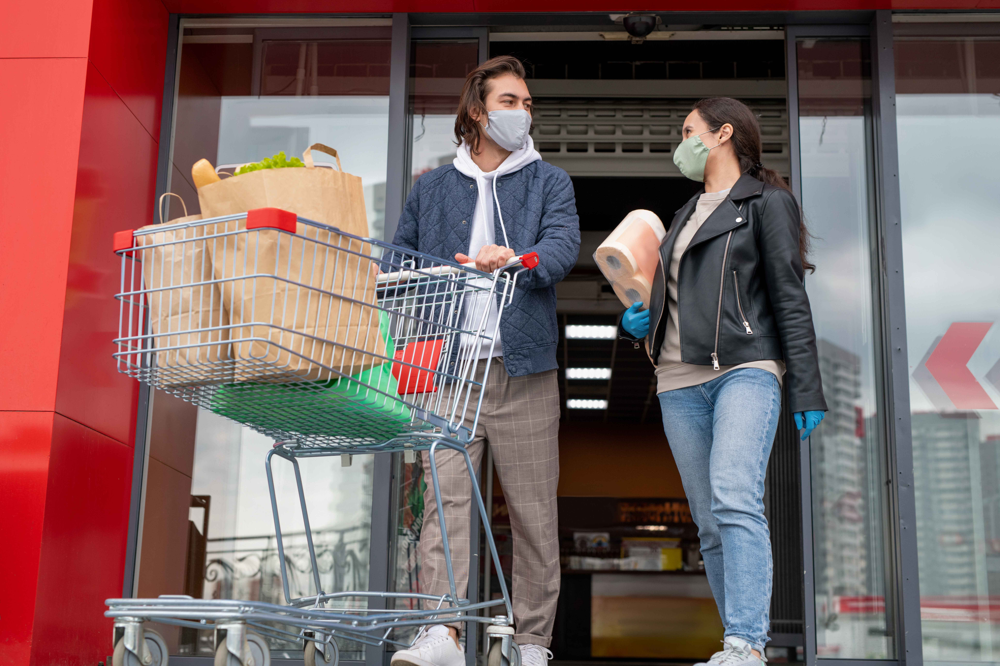

Nanay fue una plataforma web que conectó a personas que necesitaban ayuda con voluntarios dispuestos a ayudar. Un puente de solidaridad nacido en Ecuador durante la pandemia del COVID-19.
Abril 2020 - Diciembre 2022
Como la madre que busca calmar el dolor, nuestro equipo tuvo por objetivo dar voz a grupos sociales que se encontraban afectados por el contexto de la pandemia.

Nacimos como un aporte a la comunidad, para crear un ambiente más solidario, inclusivo y sostenible.

Tuvimos solicitudes en Bolivia, Ecuador, Chile, Colombia, Guatemala, México y Panamá.


Desde abril 2020 Nanay conectó personas para compartir ideas, ofrecer y recibir apoyo en momentos difíciles.
Gracias a la ayuda de nuestros voluntarios ayudamos a 56 familias en Ecuador. Cada familia recibió un kit de un valor de $25 USD con alimentos y artículos de aseo.
Noviembre - Diciembre 2020
Idónea organizó un almuerzo en diciembre 2020 para ayudar a 5 familias Nanay. Yoguibeard ayudó a 3 familias Nanay en octubre 2020.
Nanay no ofrecía o entregaba ayuda directamente. Servía como puente de conexión entre las personas que necesitaban ayuda y las personas que podían ayudar.
Nanay nació en medio de la pandemia del COVID-19 para conectar a las personas en una situación de vulnerabilidad con voluntarios que pudieran ofrecer ayuda.
Mediante la tecnología ayudamos a la gente más necesitada a salir adelante, sin costo alguno para los usuarios.
Creamos una plataforma web para que un puente entre necesidades y ayuda fuera posible, conectando comunidades en 7 países.
Nanay unió fuerzas con personas comprometidas con su comunidad para seguir apoyando a las personas que más lo necesitaban.
Ecuatoriano, comunicador organizacional e instructor certificado en Yoga y Biomecánica.
Emprendedora, gestora de proyectos y amante del servicio social. Sirvió a su ciudad en el año 2014-2015 en su rol como Reina de Quito.
Actriz y productora Colombiana. Egresada del programa de Drama de la Universidad de Nueva York, amante del arte, la cultura y los proyectos comunitarios.
Realiza un trabajo voluntario para rescatar de mercados de Quito alimentos en condiciones idóneas y darles un destino digno.
Cantante y artista ecuatoriana.
Además de haber estudiado gastronomía, le apasiona viajar, aprender idiomas y ayudar a los demás.
Fundador de Ecuadorian Mystery Box, un emprendimiento que busca compartir una pizca de Ecuador con el mundo a través de cajas “misteriosas”.
¿Qué fue Nanay y cómo funcionó?
Nanay fue una plataforma web que nació como un aporte a la comunidad, para crear un ambiente más solidario, inclusivo y sostenible.
Nanay no ofrecía o entregaba ayuda directamente. Servía como puente de conexión entre las personas que necesitaban ayuda y las personas que podían ayudar.
Se recomendaba incluir un número de teléfono para que los voluntarios pudieran contactar directamente.
Nanay nació en Ecuador pero las solicitudes para ofrecer o pedir ayuda se podían realizar desde cualquier parte del mundo.
Tuvimos solicitudes en Bolivia, Chile, Colombia, Ecuador, Guatemala, México y Panamá.
Dos años más tarde, las condiciones de la pandemia cambiaron y nos vimos en la necesidad de evolucionar, cambiar nuestro modelo de servicio para adaptarnos a esta nueva realidad.
Creemos que el emprendimiento y la oportunidad de tener un trabajo digno es vital para crear un cambio duradero en la sociedad y para mejorar la calidad de vida de las personas.
Nuestro compromiso con ayudar y mejorar la calidad de vida de nuestros usuarios siguió tan fuerte como desde el primer día de la pandemia. Les agradecemos mucho su confianza. Estamos seguros de que el camino recorrido dejó una huella positiva en la vida de muchas personas de nuestra comunidad.